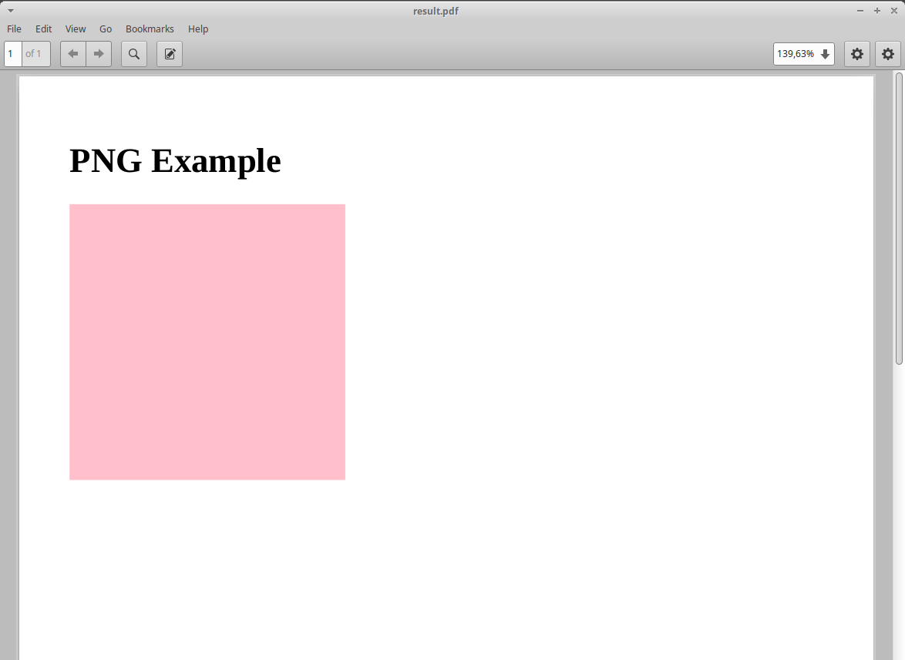

Building Templates¶
Template design considerations¶
Typical report template design will require external resources, such as Javascript libraries and web fonts. These resources can be added locally or referenced externally from eg. CDNs, as any regular web page. However, keep in mind that referencing external resources may pose a security risk, and requires internet access when generating PDFs.
Having these resources locally will reduce the PDF rendering time and minimize or eliminate the need to have internet access, but will increase the packaged report size and the effort required to maintain reports. Some assets may also have licensing limitations that prevent usage and redistribution in a packaged format.
The recommended approach depends on the use case. Reports where PDF rendering time is not critical can reference resources externally as needed; Reports where rendering time is critical (such as generated in response to a user interaction) should have these resources referenced locally, as much as possible.
ZipReport Jinja considerations¶
ZipReport allows most Jinja features, including adding your own filters. However, you can only import templates within your report folder path (including subfolders). Adding extensions to Jinja is also supported, when using the JinjaRender class directly. It works by instantiating zipreport.template.JinjaRender with the required options:
from zipreport.report import ReportFileLoader
from zipreport.template import JinjaRender
# load report from file
zpt = ReportFileLoader.load("simple.zpt")
# extensions for jinja usage
jinja_options = {
"extensions": ['jinja2.ext.i18n'],
}
# initialize JinjaRender() with the desired options
renderer = JinjaRender(zpt, jinja_options)
CSS considerations¶
When using zipreport-server, be aware that the media type print will be used for PDF generation.
Waiting for JavaScript execution before rendering¶
Some reports may contain complex JavaScript logic for page composition, and timing the finalization of these operations are a challenge. ZipReport provides a more reliable alternative to relying on waiting a predefined amount of time before triggering the render - a JavaScript event notification system that explicitly notifies the supervisor application that client-side rendering is finalized and PDF generation can be done.
The notification mechanism works by writing the string 'zpt-view-ready' to the console. As an example, this can be used to signal paged.js end of operations:
<!DOCTYPE html PUBLIC>
<html lang="en" lang="en">
<head>
<script src="https://s3.amazonaws.com/pagedmedia/pagedjs/dist/paged.js"></script>
<script>
// custom paged.js handler
class handlers extends Paged.Handler {
constructor(chunker, polisher, caller) {
super(chunker, polisher, caller);
}
afterPreview(pages) {
// event signaling readiness for PDF generation
console.log('zpt-view-ready')
}
}
// Register handler on paged.js library
Paged.registerHandlers(handlers);
</script>
</head>
<body>
Generating images dynamically¶
ZipReport provides several filters that allow the generation and inclusion of images generated in runtime, without requiring client-side composition. This is quite useful to add data-driven graphics to the reports, both for PDF and MIME generation.
The image is generated by calling a function that will save the results to a io.BytesIO memory buffer. This buffer will be added to the in-memory representation of the report file as an image with a random name by the filter, and then the appropriate html image tag will be generated, for rendering purposes.
Bundled Jinja filters for images¶
| Filter name | Description |
|---|---|
| png | Generates dynamic PNG image |
| gif | Generates dynamic GIF image |
| jpg | Generates dynamic JPEG image |
| svg | Generates dynamic SVG image |
Call syntax:
Positional args:
{{ callable | filter(data_source, alt_text, width, height, css_class }}
Named args:
{{ callable | filter(data=data_source, alt=alt_text, width=width, height=height, class=css_class }}
Where:
| Name | Description |
|---|---|
| callable | function that will generate the specific graphic; it is passed as a template variable |
| filter | bundled jinja filter to generate the appropriate img tag; see below for available filters |
| data_source | variable with data to be passed to the callable as a parameter |
| alt_text | optional img tag alt text |
| width | optional image tag width |
| height | optional image tag height |
| css_class | optional image tag css classes |
Writing an image generation function for an image filter¶
Writing a function to be used dynamically in the report is quite simple; it is a regular function that receives an argument and returns a io.BytesIO buffer object.
Below we'll see a complete example on how to generate and embed a simple image on a template. The complete code is available on the examples/filter_simple folder.
Example file list:
sample_report/index.html
sample_report/manifest.json
main.py
We start with a simple html template and a manifest file into the sample_report folder:
Html template (index.html):
<!DOCTYPE html>
<html lang="en">
<head>
<meta charset="UTF-8">
<title>Zipreport jinja filter example</title>
</head>
<body>
<h1>PNG Example</h1>
{{ colored_rectangle_fn|png(rectangle_color, "label for png") }}
</body>
</html>
Manifest file(manifest.json):
{
"author": "zipreport",
"title": "Jinja Filter example",
"description": "Dynamic jinja filter example",
"version": "1.0",
"params": [
"colored_rectangle_fn",
"rectangle_color"
]
}
We can now build the report:
$ zipreport build sample_report
== Building Report simple_report.zpt ==
Checking manifest & index file...
Building...
Copying manifest.json...
Copying index.html...
Generating simple_report.zpt...
Done!
Then, we start writing our main.py code. First, we create our image generation function. This function will generate a png colored rectangle using PIL, based on the specified color passed as argument (in this case, the value will come from the rectangle_color template variable), and returns a io.BytesIO buffer.
import io
from PIL import Image
def render_image(color='red') -> io.BytesIO:
# generate a rectangle with the specified color
img = Image.new('RGB', (256, 256), color=color)
# save generated image to a memory buffer
buffer = io.BytesIO()
img.save(buffer, format='PNG')
# rewind to the beginning of the buffer
buffer.seek(0)
return buffer
Lastly, we add some boilerplate to load, process and save the report. This example relies on zipreport-server for rendering (Some additional validations were omitted for readability):
if __name__ == "__main__":
args = sys.argv[1:]
pdf_name = Path(args[0]) # output file path
report_name = "simple_report.zpt"
report = ReportFileLoader.load(report_name)
# template variables
report_data = {
# our callback function to generate the image
'colored_rectangle_fn': render_image,
# desired color to use
'rectangle_color': 'pink',
}
# render using zipreport-cli processor
result = ZipReport("https://127.0.0.1:6543", "somePassword").render_defaults(report, report_data)
if not result.success:
print("An error occured while generating the pdf:", result.error)
exit(1)
# save io.BytesIO buffer to file
with open(pdf_name, 'wb') as f:
f.write(result.report.read())
We can now run our example program:
$ python3 main.py result.pdf
Report generated to result.pdf
$

Using placeholders for previewing purposes¶
Due to the dynamic nature of the dynamic image generation, it is not possible to preview the report correctly with zipreport debug. To work around this limitation, it is possible to specify a placeholder image (local or remote) instead of the callable parameter. The data source parameter, while mandatory, is ignored.
Following on the previous example, we can add a data.json to simple_report1 with a string url for an image instead of the callable function. This url can either be external (ex. a placeholder generation site) or local (a local image within the template structure):
data.json contents with a placeholder url:
{
"colored_rectangle_fn": "https://placehold.co/400",
"rectangle_color": ""
}
data.json contents with a local image:
{
"colored_rectangle_fn": "/images/png_graphic.png",
"rectangle_color": ""
}
Page numbers, headers and footers¶
Page numbers, headers and footers can be generated automatically using paged.js. Please check paged.js documentation for detailed information on available formatting options and advanced usage.
To ensure correct PDF generation, specially on lengthy or complex documents, it is recommended to always enable the js signaling functionality.
Including paged.js on your report¶
The most convenient way of including paged.js is to use the CDN link in your html report page:
<!DOCTYPE html>
<html>
<head>
<!-- PagedJS -->
<script src="https://unpkg.com/pagedjs/dist/paged.polyfill.js"></script>
<style type="text/css">
<!-- custom CSS rules goes here; see below -->
</style>
</head>
<body>
<!-- page content goes here -->
</body>
</html>
Adding page numbers¶
Extending on our previous example, we can now add page numbers to the bottom right corner of the page via css:
@page {
/* page footer */
@bottom-right {
/* page numbers will be prefixed by string "page" */
content: "page " counter(page);
}
}
Configuring page breaks¶
Forcing page breaks on specific sections is also possible. In this example, we will add page breaks for
/* section tag triggers page break */
section {
break-before: page;
}
Now each section block will trigger a page break on our report:
(...)
<body>
<section>
<h1>this is page 1</h1>
</section>
<section>
<h1>this is page 2</h1>
</section>
</body>
Adding a header¶
To add a header with the current chapter name, we map the heading tag (in this case, H1) to a variable, and then we extend our @page CSS definition to display that var on the top right corner of the page:
(...)
@page {
/* display 'title' contents in the top right corner of the page, in uppercase */
@top-right {
content: string(title);
text-transform: uppercase;
}
(...)
}
Adding a footer¶
Adding a static footer is similar to the approach used for page numbering. Just choose the desired page location and specify the desired content:
(...)
@page {
/* display static text on the footer */
@bottom-center {
content: "sample footer"
}
(...)
}
Complete example¶
This is how our final version of a two-page report, with page numbers in the bottom right corner, a page header with the current chapter name in uppercase, and a fixed footer with a sample text looks like:
<!DOCTYPE html>
<html>
<head>
<!-- PagedJS -->
<script src="https://unpkg.com/pagedjs/dist/paged.polyfill.js"></script>
<style type="text/css">
/* 'title' variable comes from h1 contents */
h1 {
string-set: title content(text);
}
/* section tag triggers page break */
section {
break-before: page;
}
@page {
/* display 'title' contents in the top right corner of the page, in uppercase */
@top-right {
content: string(title);
text-transform: uppercase;
}
/* display static text on the footer */
@bottom-center {
content: "sample footer"
}
/* page footer */
@bottom-right {
/* page numbers will be prefixed by string "page" */
content: "page " counter(page);
}
}
</style>
</head>
<body>
<section>
<h1>this is page 1</h1>
</section>
<section>
<h1>this is page 2</h1>
</section>
</body>
</html>
Advanced usage¶
Visit paged.js documentation for more details on available features. An advanced example, with a cover page, sections and a table of contents can be found in the available examples.
Generating table of contents (ToC)¶
ZipReport provides a simple example of automatic table of content generation with JavaScript and CSS in the examples section. It works by populating a div element with the desired index entries, and then use the CSS target-counter property to generate the page numbers.
Lets build an example reusing both the js and css example files (originally they were provided by paged.js, but are no longer available). Copy both files to your report folder, and rename them to toc.js and toc.css respectively:
$ wget https://github.com/zipreport/zipreport/tree/master/examples/pagedjs/toc_example_report/js/toc.js -O toc.js
$ wget https://github.com/zipreport/zipreport/tree/master/examples/pagedjs/toc_example_report/css/toc.css -O toc.css
We can then revisit and extend our previous example from page numbers:
(...)
<!-- PagedJS -->
<script src="https://unpkg.com/pagedjs/dist/paged.polyfill.js"></script>
<!-- ToC script -->
<script src="toc.js"></script>
<link href="toc.css" rel="stylesheet" type="text/css">
(..)
And add the index page to the body, and add a css class 'toc-element' to mark desired toc entries:
<body>
<!-- INDEX PAGE -->
<section class="toc">
<h1>Index</h1>
<div id="toc"></div>
</section>
<section>
<h1 class="toc-element">this is page 1</h1>
</section>
<section>
<h1 class="toc-element">this is page 2</h1>
</section>
</body>
And finally, hook both the dynamic ToC generation and ZipReport js signaling to the paged.js event handlers, just before closing the body tag:
(...)
<script>
class handlers extends Paged.Handler {
constructor(chunker, polisher, caller) {
super(chunker, polisher, caller);
}
afterPreview(pages) {
// signal zipreport PDF generation engine
console.log('zpt-view-ready')
}
beforeParsed(content) {
createToc({
content: content,
tocElement: '#toc', // our target element
titleElements: ['.toc-element'] // CSS classes of elements to add to the index
});
}
}
Paged.registerHandlers(handlers);
</script>
</body>